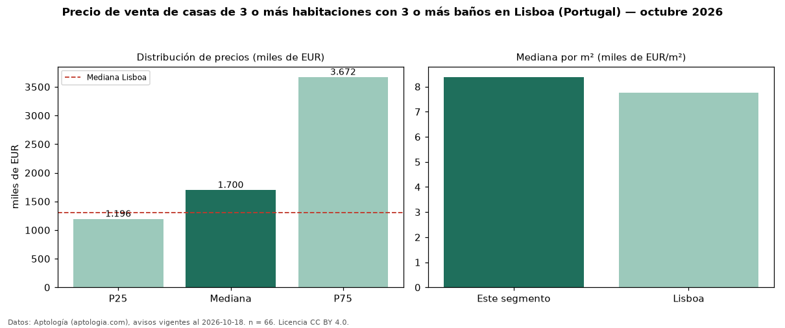

Precio de venta de casas de 3 o más habitaciones con 3 o más baños en Lisboa (Portugal) — octubre 2026
EUR 1,70 millones es el precio mediano de casas de 3 o más habitaciones con 3 o más baños en venta en Lisboa (Portugal) (n = 66 avisos). Frente a la mediana de las casas de 3 o más habitaciones en venta de Lisboa (EUR 1,43 millones, n = 78), queda 19 % por encima; este segmento reúne el 85 % de esos avisos. Por metro cuadrado, la mediana es EUR 8.385/m² (n = 64), 1 % por encima de las casas de 3 o más habitaciones en venta de Lisboa (EUR 8.287/m²). La mitad central de los avisos va de EUR 1,20 millones a EUR 3,67 millones (razón 3,1), una dispersión alta. El área mediana anunciada es 249 m². La mediana de todas las casas en venta de Lisboa es EUR 1,30 millones (+31 % de diferencia). 73 % de los avisos con el dato declara estacionamiento o cochera. Datos: Aptología (aptologia.com), CC BY 4.0 — https://www.aptologia.com/pt/venda/lisboa. Archivos: PDF, CSV con las cifras y gráfica PNG.

| Avisos únicos | 66 |
|---|---|
| Percentil 25 | COP 1.196.250 |
| Mediana | COP 1.700.000 |
| Percentil 75 | COP 3.672.500 |
| Mediana por m² | COP 8.385 |
Fuente: avisos vigentes de portales inmobiliarios recopilados por Aptología, deduplicados (mínimo 30 avisos únicos por celda). Precios pedidos, no cerrados. Fecha: 2026-10-18.